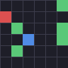

A procedurally-generated creature-collection RL environment for measuring long-horizon agency and in-context rule inference.
Each baseline is scored on held-out seeds (unseen maps and a new hidden type-chart) it never trained on. The rank is by held-out mean, not in-distribution score — the benchmark rewards generalization to worlds the agent has never seen.
| rank | baseline | held-in | held-out | gap |
|---|---|---|---|---|
| 1 | scripted | 3.480 | 3.740 | -0.260 |
| 2 | random | 2.200 | 1.960 | 0.240 |
Pinned spec (reproducible): {"grid_size": 10, "max_steps": 200, "n_heldin": 100, "n_heldout": 100, "num_creatures": 5, "num_gyms": 3, "patch_radius": 2}
The same agent, dropped into an unseen held-out seed (a new map and a new hidden type-chart), still defeats the gym boss:

Honest scope. This is a prototype launch page,
not a hosted product. Sealing here is in-process (a hosted eval-as-a-service
needs server-side secret seeds + a submission sandbox). Numbers are generated live by the
scripted/free baselines via scripts/build_site.py; learned baselines appear only
when the [rl] extra is installed. Publishing this page is a human decision.
Generated: scripted/free baselines.